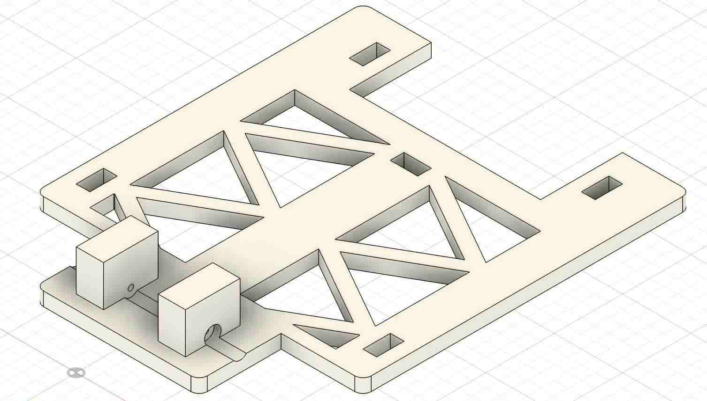
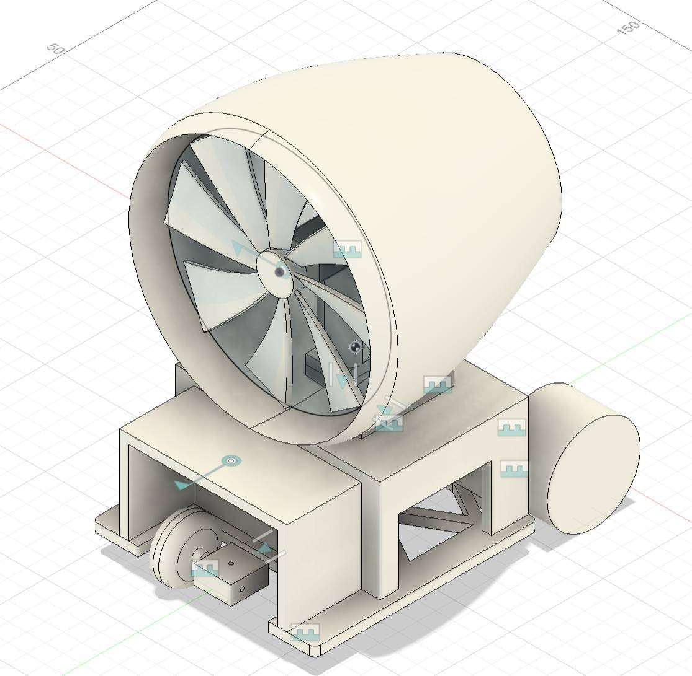
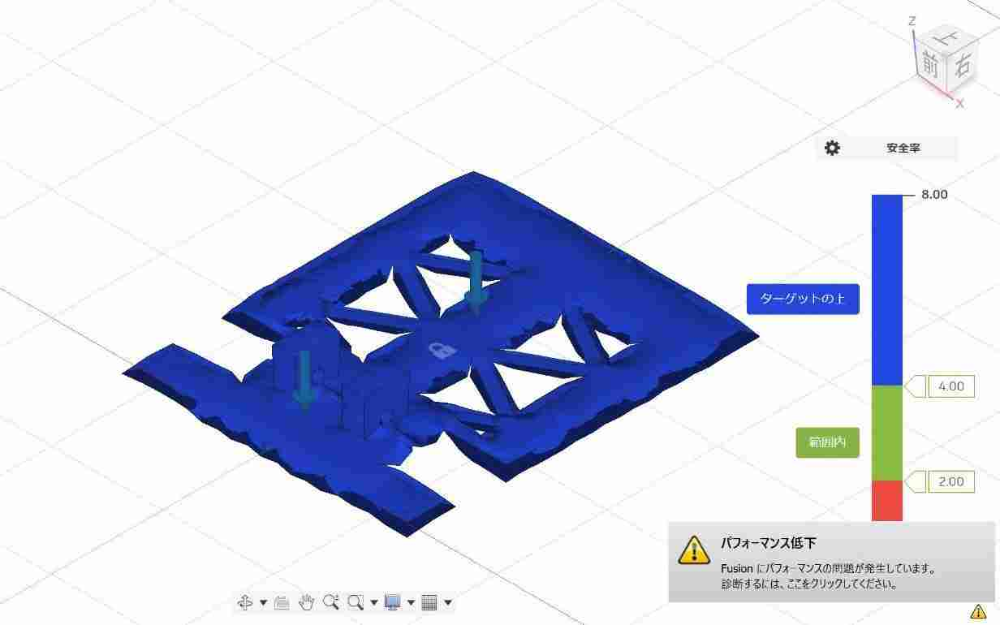
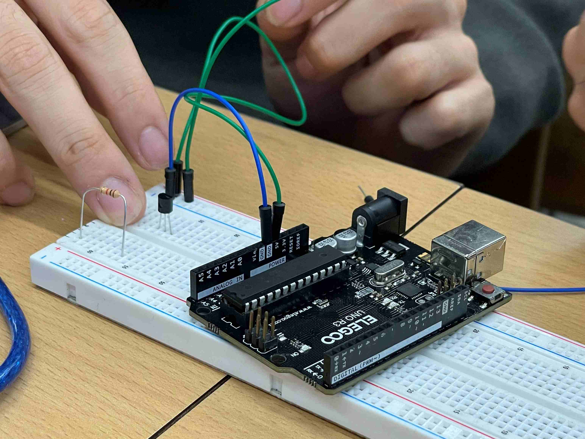
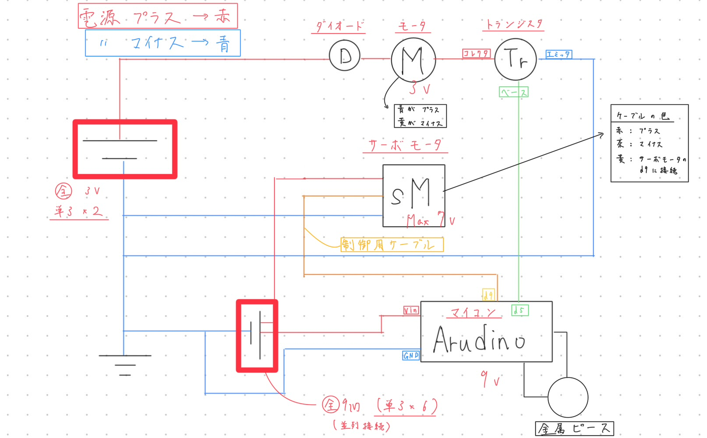
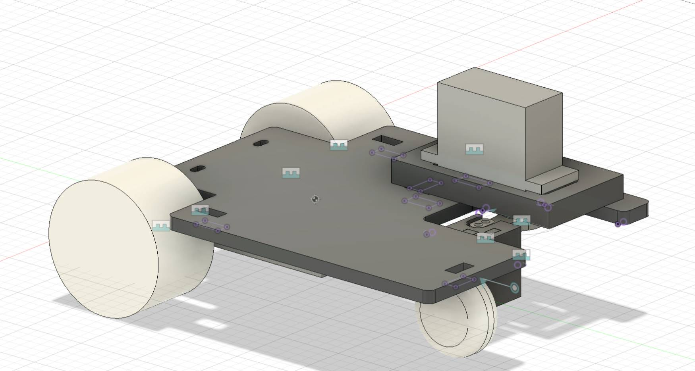

創成プロジェクト A1班
課題を達成する
モビリティの創造。
軽量、低コスト、そして成功率90%以上を目指す高精度な自律走行を実現する。
プロジェクト目標
軽量化
車体の軽量化を追求する。
低コスト
低コストでモビリティの実現を目指す。
安定動作性
厳密な制御により、安定した動作性を確保する。
必要最低限の装備
目標達成に必須な装備のみに絞り込む。
マイコン制御による達成
マイクロコンピュータを活用して、全ての課題を達成する。
SDGsへの貢献 (部品再利用)
既存部品の再利用を通じて、SDGs目標達成に貢献する。
成功率90%以上
デモンストレーションにおいて成功率90%以上の達成を目指す。
技術概要
主要スペック一覧
| サイズ | 150㎜ × 120㎜ × 130㎜ |
|---|---|
| 駆動方式 | 二輪駆動タイヤ方式 (安定した推進力を実現) |
| 制御システム | マイクロコンピュータ (C++ / Arduino) 制御 |
| 反転機構 | サーボモータ駆動による車体180°回転 |
| 旋回機構 | サーボモータを用いた正確なステアリング旋回 |
| トリガ機構 | 金属ピース検出 (ON/OFFスイッチとして機能) |
車体の安定動作と複雑なUターン機構を、マイコン制御で実現しています。
ロジック
金属センサーの状態に応じて、待機 → 直進駆動 → 一時停止 → Uターン・再開 のサイクルを自動で切り替えるロジックを採用。
マイコン制御
マイクロコンピュータで旋回と180°反転を精密に制御。特にUターン動作の正確性が鍵となります。
電力安定化
ノイズや過負荷による誤動作を防ぐため、DCモータとマイコン/サーボの電力系統を分けました。
設計変更
当初のファン駆動から、安定性・推進力に優れたタイヤ駆動へ早期に方針転換しました。
🔄 360° 車体ビューア
左右にドラッグして回転
製作ヒストリー
当初はファン駆動の車体を製作することを検討していましたが、途中で大きく方針転換しました。
① 車体の設計：台車部分及び全体図
プロジェクト開始にあたり、車体構造の基礎設計を行い、構成図を作成しました。
② 部品の強度計算
設計した各部品の強度計算を実施し、耐久性を検証しました。
③ ファン部分の確認と問題発覚
ここで大きく方針転換 → 十分な推進力を得ることが難しく、タイヤ駆動に変更した。
④ 回路の設計
⑤ マイクロコンピュータによるサーボモータ制御
⑥ 車体の再設計：全体部分
⑦ トラブル発生：電源構成の変更
電池ケースの不具合により、単3電池6本から9V電池への変更を行いました。
⑧ 制御コードの作成とシーケンス実装
// 12/18 試走成功版コード (抜粋)
#include <Servo.h>
const int PIN_MOTOR_PWM = 5;
const int PIN_MOTOR_DIR = 7;
const int PIN_SERVO = 9;
Servo myServo;
bool isFinished = false;
void setup() {
pinMode(PIN_MOTOR_PWM, OUTPUT);
pinMode(PIN_MOTOR_DIR, OUTPUT);
myServo.attach(PIN_SERVO);
delay(2000);
}
void loop() {
if (isFinished == false) {
myServo.write(90); motorOn(); delay(3000); // 直進
motorOff(); delay(1000); // 停止
myServo.write(45); motorOn(); delay(2400); // Uターン
myServo.write(90); motorOn(); // 直進再開
isFinished = true;
}
}⑨ トランジスタの特定とスイッチング回路
エミッタ(E)・ベース(B)・コレクタ(C)の配列を特定し、接続を行いました。
エミッタ
GNDへ接続
ベース
Arduino D5へ
コレクタ
モータ(-)へ
⑩ 旋回動作の検証
⑪ プログラムの検証（⑧の実証）
🔧 工夫点
配線の色分け
視認性を高め、再設計や修正が容易になった。
起電力の分離
モータを別系統とし、マイコンの誤動作を防止。
改善サイクル
試走データを反映したPDCAサイクルを構築。
最適化制御
ピン番号に合わせた無駄のない制御設計。
モジュール構造
前輪・駆動・回路を分割。整備性と剛性を両立。
キャリブレーション
実測に基づきUターン成功率を向上。
安全動作設計
2秒待機などのシーケンスで安定性を維持。
誤配線防止
実物写真＋回路図で新人でも安全に作業可能。
本サイトの作成
製作過程を視覚的に分かりやすく集約。
管理者サイト
技術リソースと記録を一括管理。
よくある質問
前輪・駆動・電子回路の3モジュール分割設計で、整備性を大幅に向上させています。
ファンの推進力不足を試作段階で確認したため、確実性の高いタイヤ駆動を選択しました。
Arduinoを使用し、C/C++で制御。フラグ管理により安定した自律走行を実現しています。
9V電池を採用し、マイコン系とDCモータ系の電源を分離して誤動作を防止しています。
トランジスタによるスイッチング回路を採用。Arduinoの信号で大電流を制御します。
E-B-C配列の図解と実物写真を共有し、作業ミスを防いでいます。
サーボの設置位置や配線の色分けにより、保守性と再設計性を高めています。
方針転換後の再設計と、Uターンの角度・時間の微調整に時間を費やしました。
12/18の試走で、停止から旋回、復帰までの自律走行シーケンスを完全達成しました。
各担当者へ直接ご連絡いただけます。